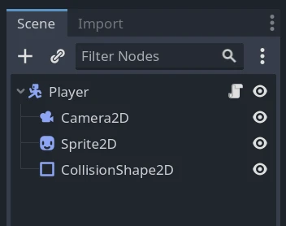
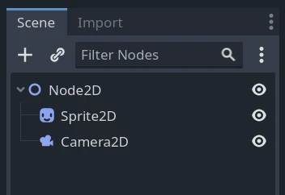
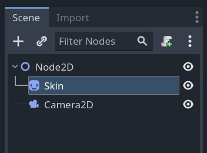
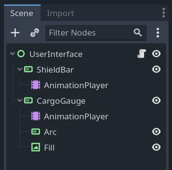
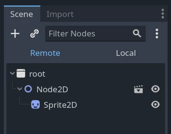
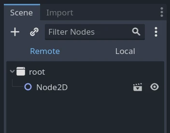

Node và instance của scene
Hướng dẫn này giải thích cách lấy node, tạo node, thêm chúng làm node con và tạo instance scene từ code.
Xem thêm
Xem bài hướng dẫn Tạo instance để tìm hiểu cách Godot tiếp cận việc tạo instance scene.
Lấy node
Bạn có thể lấy tham chiếu đến một node bằng cách gọi phương thức Node.get_node(). Để cách này hoạt động, node con phải có mặt trong scene tree. Lấy nó trong hàm _ready() của node cha sẽ đảm bảo điều đó.
Ví dụ, giả sử bạn có một scene tree như thế này, và bạn muốn lấy tham chiếu đến các node Sprite2D và Camera2D để truy cập chúng trong script.

Để làm vậy, bạn có thể dùng đoạn mã sau.
var sprite2d
var camera2d
func _ready():
sprite2d = get_node("Sprite2D")
camera2d = get_node("Camera2D")
private Sprite2D _sprite2D;
private Camera2D _camera2D;
public override void _Ready()
{
base._Ready();
_sprite2D = GetNode<Sprite2D>("Sprite2D");
_camera2D = GetNode<Camera2D>("Camera2D");
}
Lưu ý rằng bạn lấy node bằng tên của chúng, không phải bằng kiểu. Ở trên, "Sprite2D" và "Camera2D" là tên của các node trong scene.

Nếu bạn đổi tên node Sprite2D thành Skin trong Scene dock, bạn phải sửa dòng lấy node trong script thành get_node("Skin").

Đường dẫn node
Khi lấy tham chiếu đến một node, bạn không bị giới hạn chỉ lấy node con trực tiếp. Hàm get_node() hỗ trợ đường dẫn, hơi giống khi làm việc với trình duyệt file. Thêm dấu gạch chéo để phân tách các node.
Hãy xét scene ví dụ sau, với script được gắn vào node UserInterface.

Để lấy node AnimationPlayer, bạn sẽ dùng đoạn mã sau.
var animation_player
func _ready():
animation_player = get_node("ShieldBar/AnimationPlayer")
private AnimationPlayer _animationPlayer;
public override void _Ready()
{
base._Ready();
_animationPlayer = GetNode<AnimationPlayer>("ShieldBar/AnimationPlayer");
}
Ghi chú
Giống như đường dẫn file, bạn có thể dùng ".." để lấy node cha. Tuy vậy, cách làm tốt nhất là tránh làm điều này để không phá vỡ tính đóng gói. Bạn cũng có thể bắt đầu đường dẫn bằng dấu gạch chéo xuôi để biến nó thành đường dẫn tuyệt đối, khi đó node trên cùng của bạn sẽ là "/root", viewport gốc được định nghĩa sẵn của ứng dụng.
Cú pháp rút gọn
Bạn có thể dùng hai cách viết tắt để rút gọn mã GDScript. Thứ nhất, đặt annotation @onready trước một biến thành viên sẽ khiến nó được khởi tạo ngay trước callback _ready().
@onready var sprite2d = get_node("Sprite2D")
Ngoài ra còn có một cách viết ngắn cho get_node(): ký hiệu đô la, "$". Bạn đặt nó trước tên hoặc đường dẫn của node bạn muốn lấy.
@onready var sprite2d = $Sprite2D
@onready var animation_player = $ShieldBar/AnimationPlayer
Tạo node
Để tạo một node từ code, hãy gọi phương thức new() của nó như với bất kỳ kiểu dữ liệu dựa trên lớp nào khác.
Bạn có thể lưu tham chiếu của node vừa tạo vào một biến và gọi add_child() để thêm nó làm con của node mà bạn đã gắn script vào.
var sprite2d
func _ready():
sprite2d = Sprite2D.new() # Create a new Sprite2D.
add_child(sprite2d) # Add it as a child of this node.
private Sprite2D _sprite2D;
public override void _Ready()
{
base._Ready();
_sprite2D = new Sprite2D(); // Create a new Sprite2D.
AddChild(_sprite2D); // Add it as a child of this node.
}
Để xóa một node và giải phóng nó khỏi bộ nhớ, bạn có thể gọi phương thức queue_free() của nó. Làm vậy sẽ xếp node vào hàng đợi để xóa ở cuối frame hiện tại, sau khi nó xử lý xong. Lúc đó, engine sẽ gỡ node khỏi scene và giải phóng đối tượng trong bộ nhớ.
sprite2d.queue_free()
_sprite2D.QueueFree();
Trước khi gọi sprite2d.queue_free(), remote scene tree trông như thế này.

Sau khi engine giải phóng node, remote scene tree không còn hiển thị sprite nữa.

Bạn cũng có thể gọi free() để hủy node ngay lập tức. Hãy cẩn thận khi làm vậy vì mọi tham chiếu đến nó sẽ lập tức trở nên không hợp lệ. Chúng tôi khuyên dùng queue_free() trừ khi bạn biết rõ mình đang làm gì.
Khi bạn giải phóng một node, tất cả node con của nó cũng bị giải phóng. Nhờ vậy, để xóa cả một nhánh của scene tree, bạn chỉ cần giải phóng node cha trên cùng.
Tạo instance scene
Scene là các khuôn mẫu mà từ đó bạn có thể tạo bao nhiêu bản sao tùy thích. Thao tác này gọi là tạo instance, và thực hiện nó từ code gồm hai bước:
Tải scene từ ổ đĩa cục bộ.
Tạo một instance của resource PackedScene đã tải.
var scene = load("res://my_scene.tscn")
var scene = GD.Load<PackedScene>("res://MyScene.tscn");
Preload scene có thể cải thiện trải nghiệm người dùng vì thao tác tải diễn ra khi trình biên dịch đọc script chứ không phải lúc runtime. Tính năng này chỉ có trong GDScript.
var scene = preload("res://my_scene.tscn")
Lúc này, scene là một resource packed scene, không phải một node. Để tạo node thực sự, bạn cần gọi PackedScene.instantiate(). Nó trả về một cây node mà bạn có thể dùng làm con của node hiện tại.
var instance = scene.instantiate()
add_child(instance)
var instance = scene.Instantiate();
AddChild(instance);
Ưu điểm của quy trình hai bước này là bạn có thể giữ một packed scene đã tải sẵn và tạo instance mới ngay khi cần. Ví dụ, để nhanh chóng tạo instance nhiều kẻ địch hoặc viên đạn.